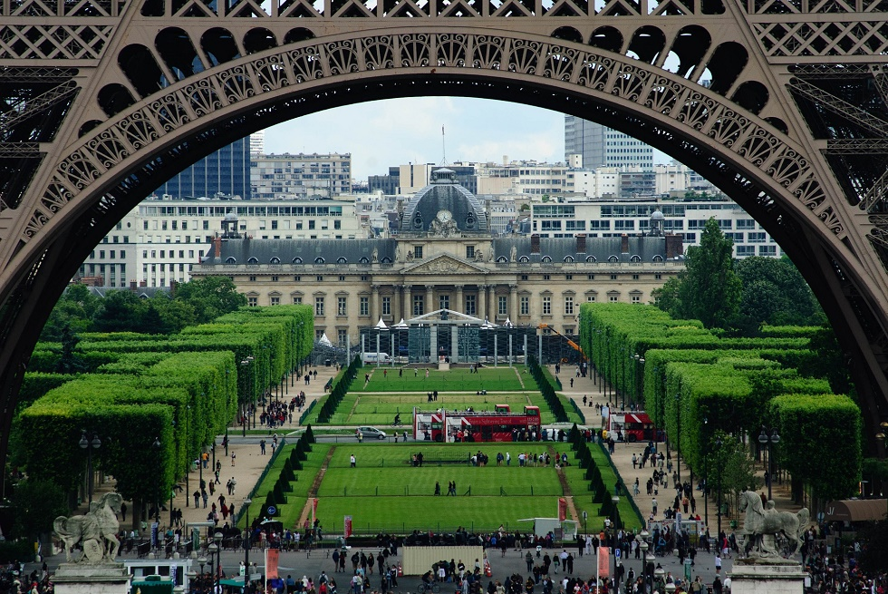

Tappa 1
Campo di Marte
Il Campo di Marte è il grande spazio verde ai piedi della Torre Eiffel, che si estende fino alla Scuola Militare. In origine, nel XVIII secolo, era un campo d’addestramento militare usato per le esercitazioni e le parate dei soldati francesi.Con il tempo è diventato un luogo pubblico e simbolico, teatro di feste, celebrazioni nazionali e proteste storiche. Oggi è uno dei parchi più famosi di Parigi, perfetto per picnic, foto e per godersi la vista della Torre Eiffel soprattutto al tramonto.
